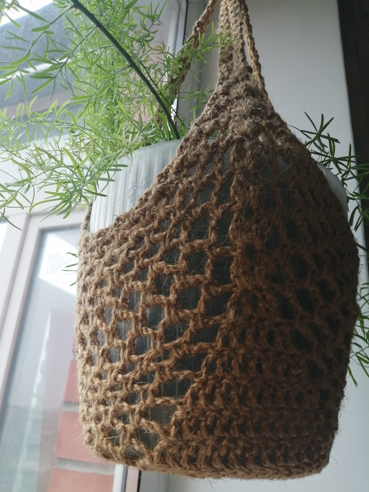


Уютный подоконник: кашпо разных размеров, подставки под горшки, подвесные держатели.
Вязаная оправа для ваших зеленых любимцев. Маленькая деталь, которая делает пространство мягче. Стильный и экологичный аксессуар для дома. Каждая петелька создана вручную, что гарантирует уникальность изделия. Прочное плетение отлично держит форму, скрывает недостатки пластиковых горшков и добавляет интерьеру природной эстетики.
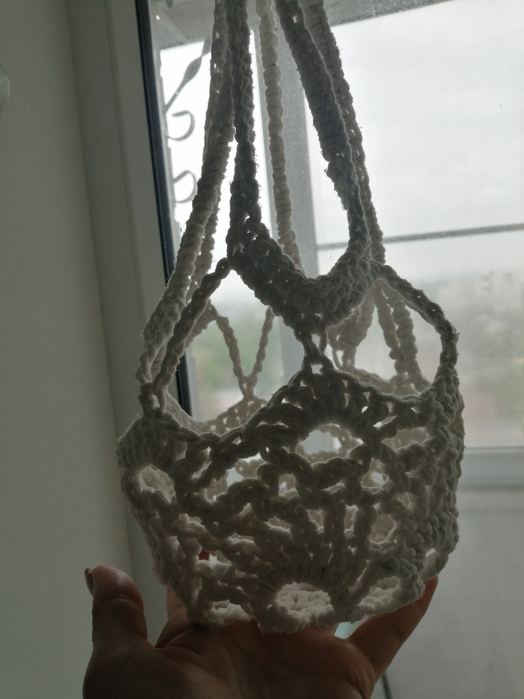
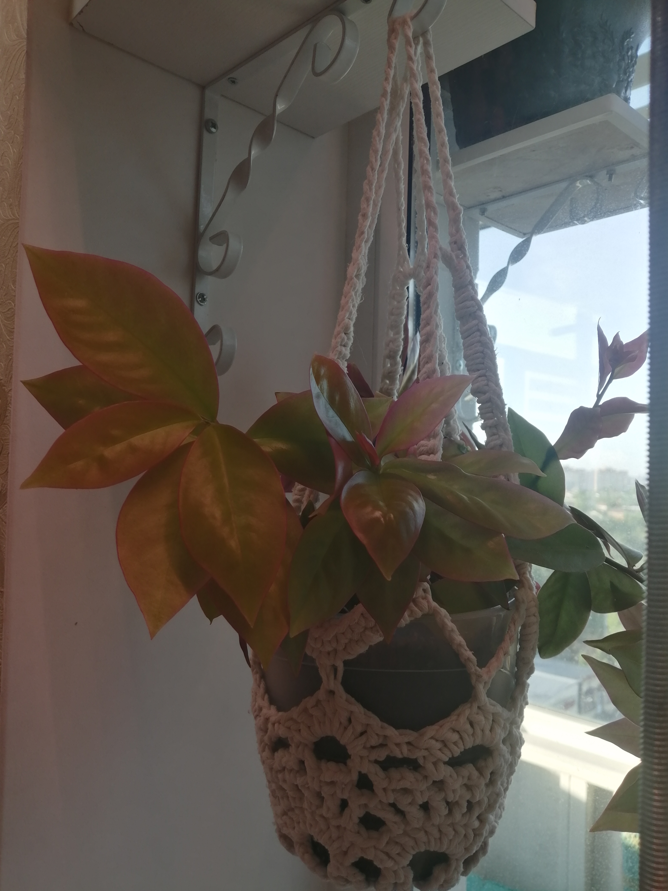

Дом для ваших мелочей: Порядок в деталях.
Организация пространства: корзинки, подставки, бутылочницы. Идеальный способ спрятать визуальный шум и добавить дому природной теплоты. Эти фактурные корзины созданы для тех, кто ценит эстетику порядка. В ванной комнате они бережно сохранят косметику и чистые полотенца, в спальне или прихожей — станут стильным домом для украшений, ключей и полезных мелочей, а в детской — соберут мелкие игрушки.

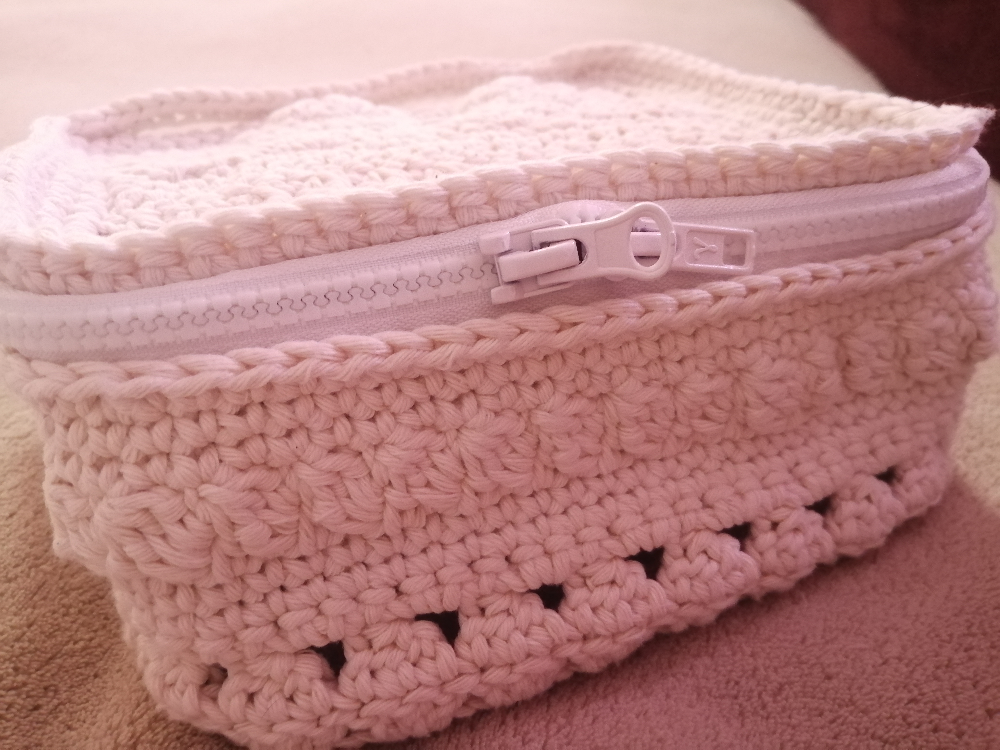
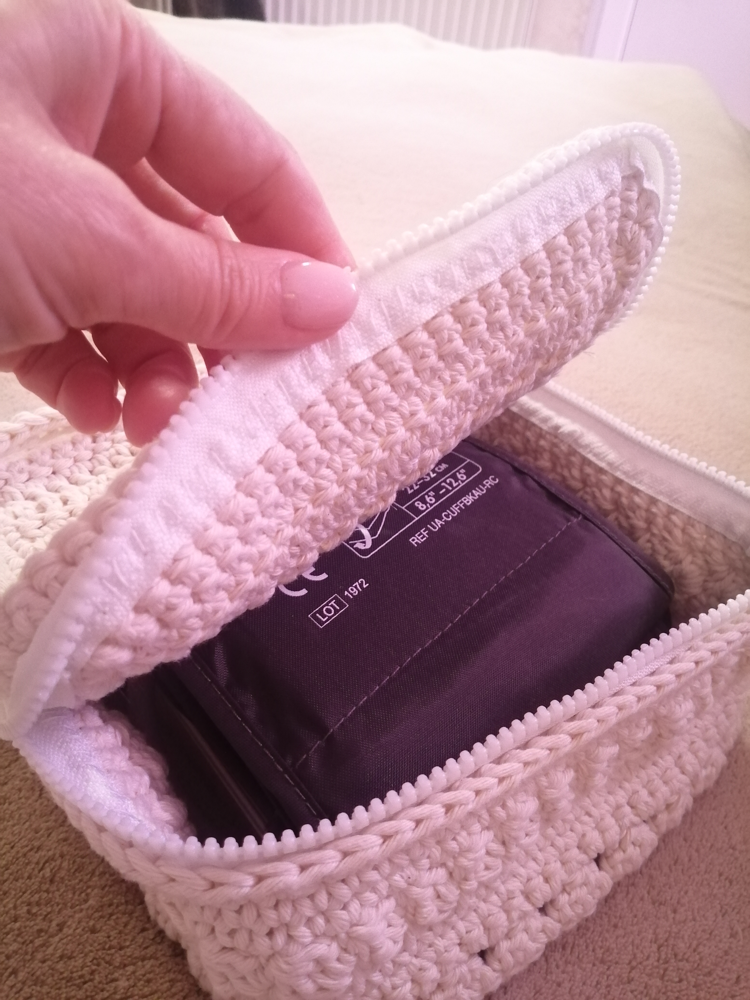
Хлопок дарит невероятную мягкость. Каждая корзинка отлично держит форму благодаря плотной авторской вязке.
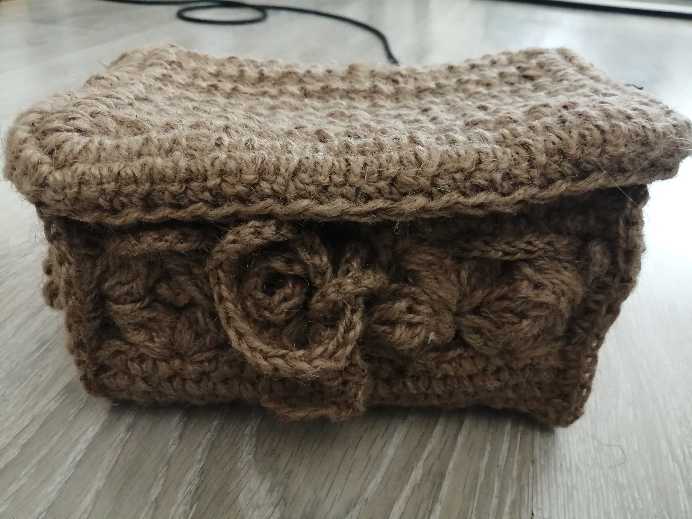
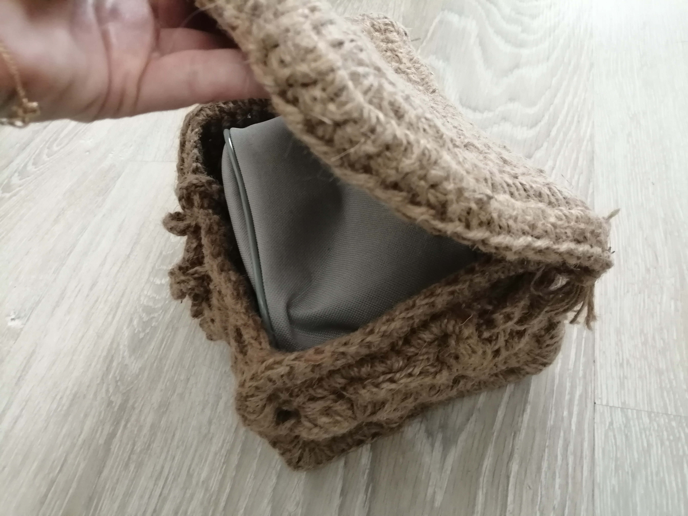
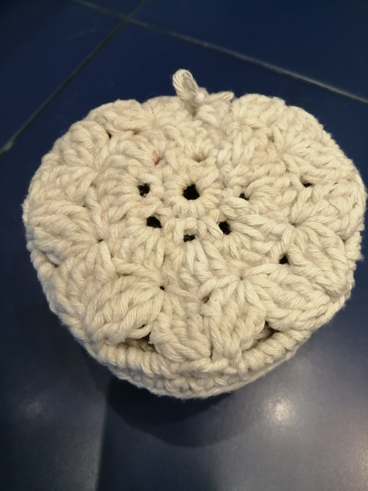
Вязаная бутылочница - это стильный, необычный и очень практичный аксессуар для тех, кто находится в движении. Эта вязаная сумочка-чехол создана для удобного ношения термоса, бутылки с водой или любимого напитка на прогулках, пикниках и фестивалях. Плотное плетение защищает стеклянную или металлическую бутылку от случайных царапин и ударов, а удобная ручка позволяет освободить руки, накинув её на плечо. Отличная идея для оригинального и полезного подарка человеку, который заботится об экологии и любит долгие пешие прогулки.


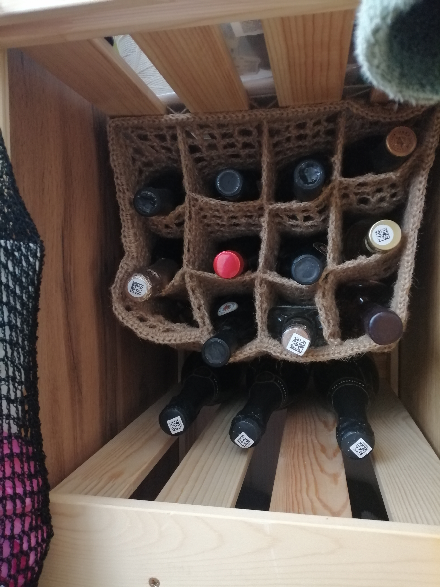
Эко-прогулка (Аксессуары вне дома): Стиль, который бережет планету.
Вместительные, прочные и легкие сумки для покупок и прогулок. Легко помещаются в карман, раскрываются до внушительных размеров.

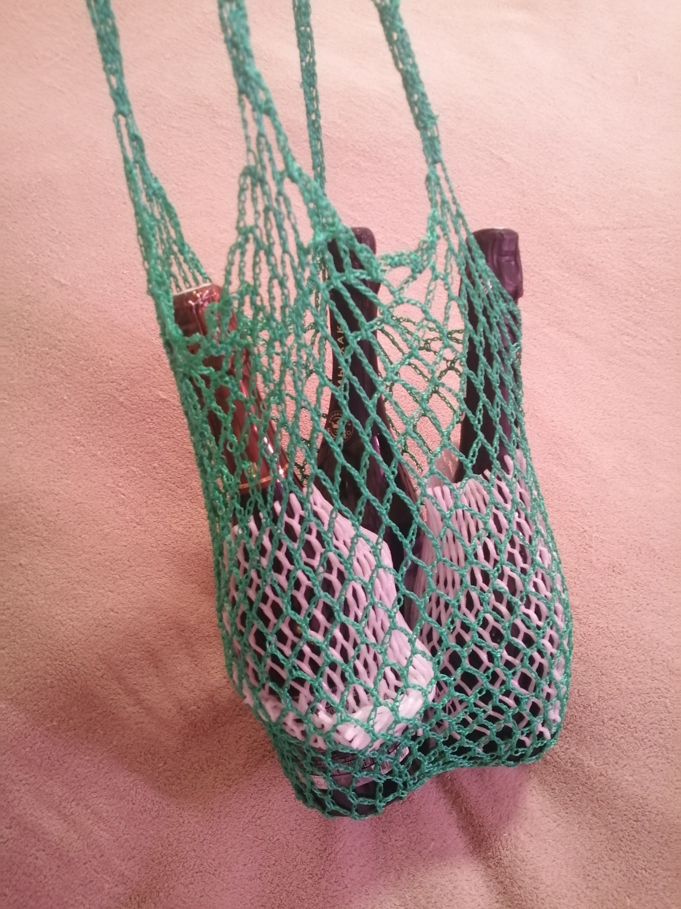
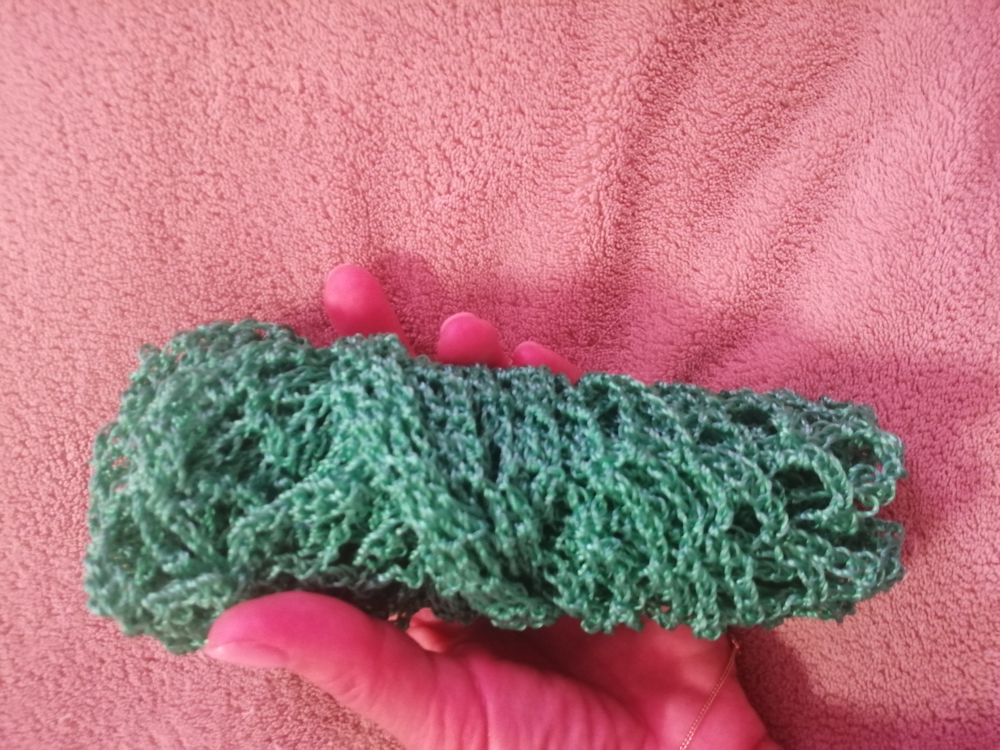
Коврики: Мягкое утро для ваших ног. Массажный, невероятно тактильный и теплый коврик ручной работы. Плотный рельефный узор из натурального джута или толстого хлопкового шнура приятно массирует стопы, даря ощущение расслабления с первых секунд. Идеал для спальни, чтобы утро начиналось с мягкого прикосновения, или для ванной комнаты (джут мгновенно впитывает влагу и быстро сохнет).

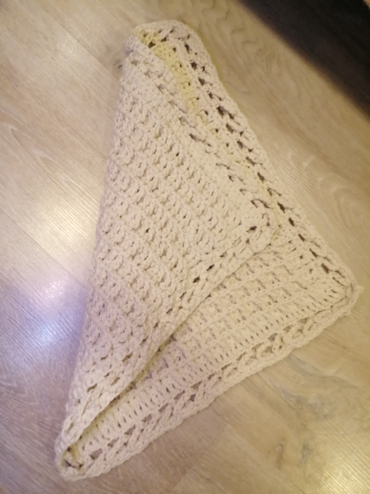

Подставки и сервировочные салфетки: Эстетичные подставки под горячее и плейсматы, которые превратят обычную трапезу в семейный ужин. Они надежно защищают поверхность стола от тепла посуды, капель и царапин. Салфетки из джута добавляют столу природного шарма, а хлопковые салфетки создадут праздничную атмосферу в стиле сканди.

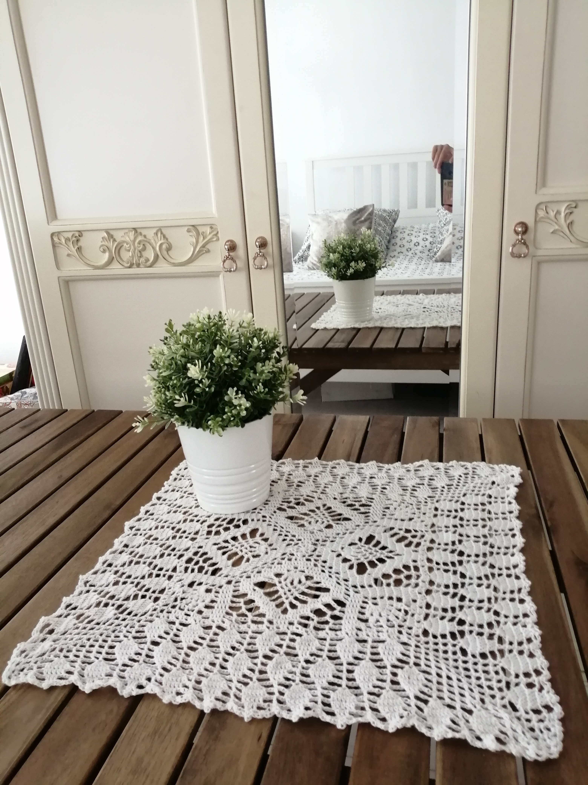

!ВНИМАНИЕ! Стоимость указана за работу без учета материалов. Натуральный хлопок и джут рассчитываются отдельно под ваши размеры. Если у Вас нить с недостатками, то стоимость работы будет выше.